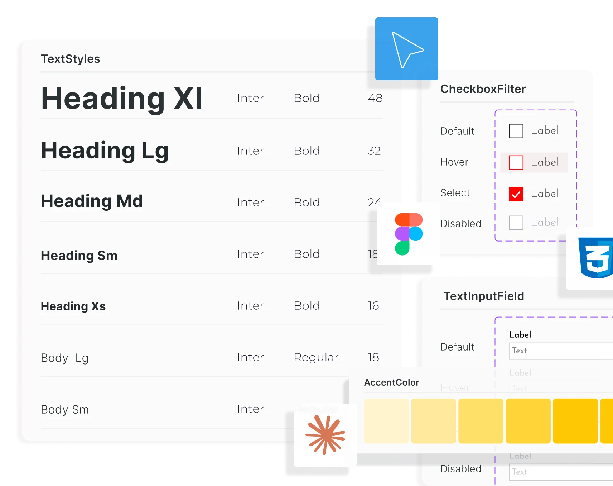

Sobre mí
Soy diseñador multimedia enfocado en UI/UX, con una base sólida para crear experiencias coherentes tanto en funcionalidad como en estética. Me especializo en diseñar interfaces claras, funcionales y pensadas para escalar, aplicadas a productos digitales como software, sitios web y apps.
Trabajo principalmente con Figma bajo un enfoque sistemático: uso componentes reutilizables, variables y tokens de diseño que garantizan consistencia y eficiencia. Además, potencio mi flujo de trabajo con herramientas de IA como Claude Code, ChatGPT, Gemini y Lovable, lo que me permite validar datos y prototipar con mayor agilidad.
Cuento también con sólidos conocimientos en desarrollo front-end, permitiéndome colaborar fluidamente con desarrolladores y entender cómo se implementan realmente las interfaces.
